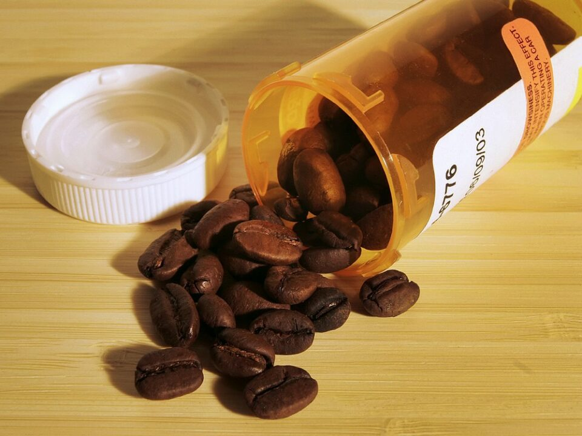
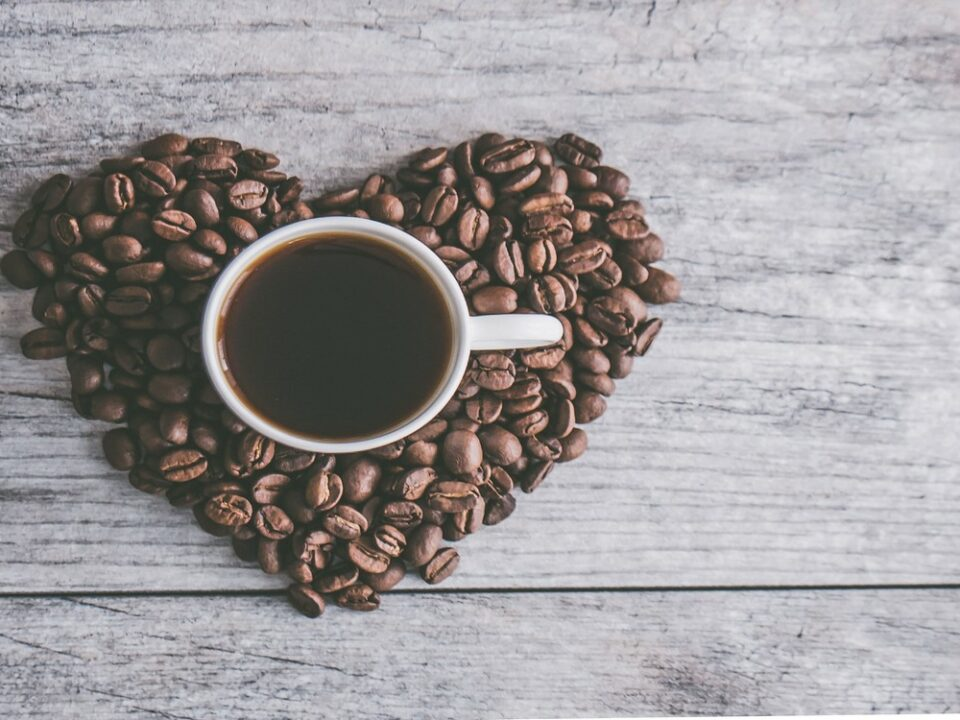
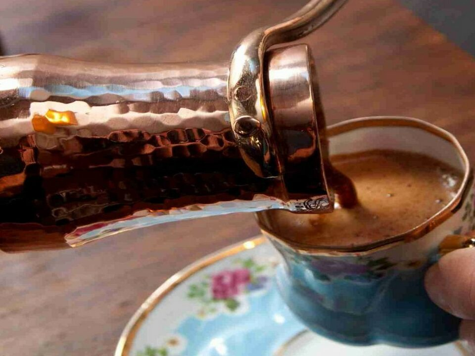
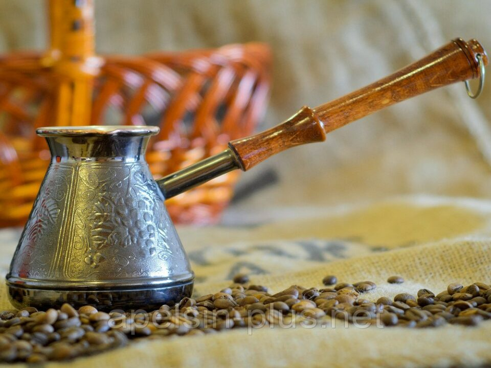
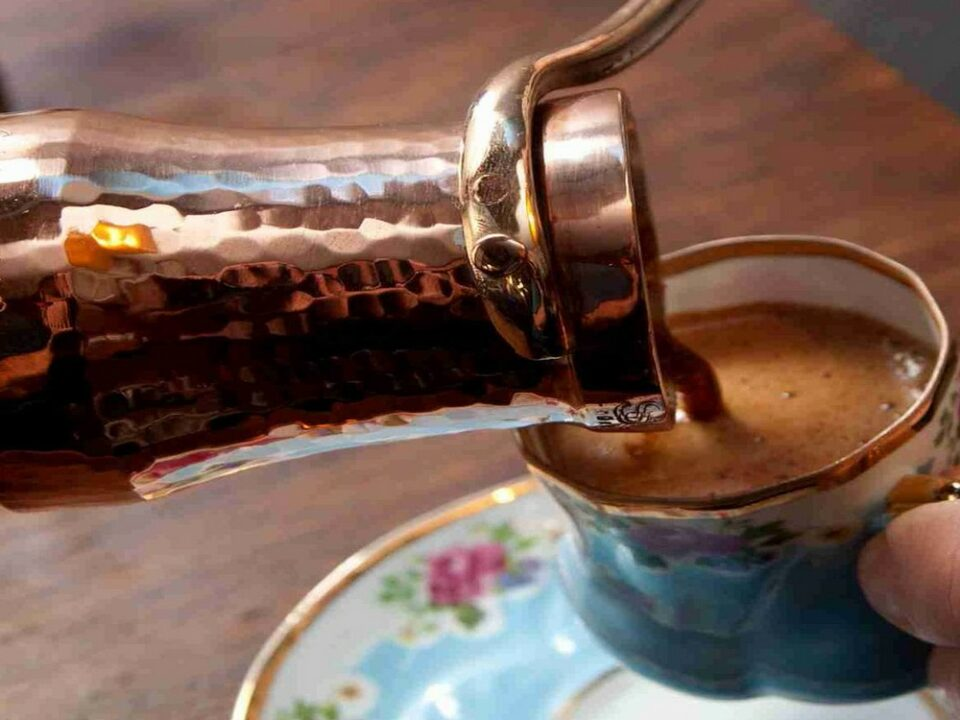
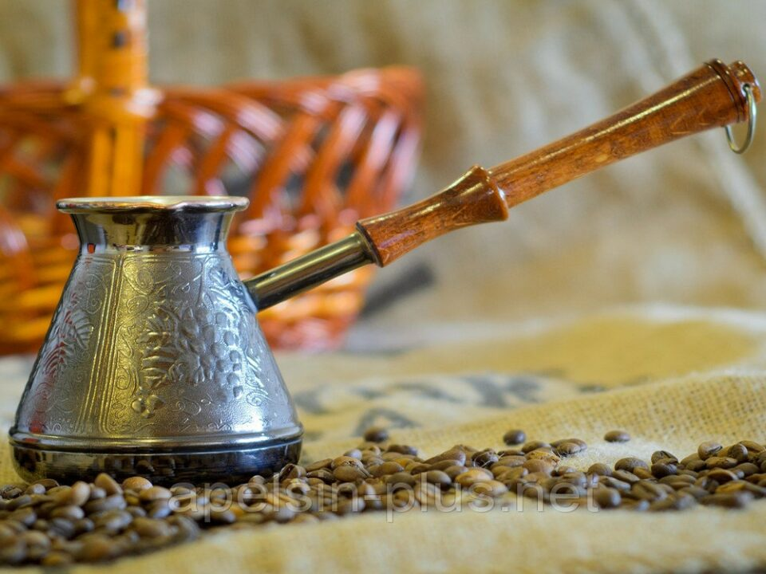

 



12 полезных свойств кофе для организма человека
Большинство людей не представляет свой день без чашечки ароматного натурального кофе. Этот «напиток богов» способен подарить радость на весь следующий трудовой день. Кофе полезен для человеческого [�]
Кофе не вызывает учащенного сердцебиения
Кофе не только не вызывает нарушений в работе сердца, но при регулярном употреблении даже способствует улучшению здоровья, утверждают американские исследователи. Исследование, опубликованное в понедельник в журнале [�]
Горшок мокко для кофе: критерии выбора
Кофе – один из самых популярных напитков. Мало кто может представить день без бодрящей чашки хорошего кофе. Кофемашины, которые готовят кофе по-разному, постепенно становятся обычным кухонным [�]
Варка кофе и 6 ошибок, совершаемых чаще всего
Для миллионов людей идеальное утро начинается с кружки кофе. Чтобы вкусовые и ароматические характеристики напитка раскрылись в полной мере, принеся с собой бодрость, нужно исключить из [�]
Турка для варки кофе: материалы, советы по выбору
В течение многих лет турка остается одним из наиболее популярных приборов для варки кофе. Она позволяет наслаждаться богатым ароматом и насыщенным вкусом кофе прямо у себя [�]
Кофе для красивой фигуры: худеем со вкусом
Каждая девушка знает, что кофе – это не только вкусный напиток, но и отличный калорийный завтрак. Именно поэтому с этим напитком чаще всего начинают утро. Принципы [�]
Кофе помогает в борьбе с диабетом
Кофе может снизить риск заболеть диабетом II типа Отличная новость для многочисленных фанатов кофе: у тех, кто пьет больше кофе, реже бывает инсулин независимый диабет. Такое [�]
Как покупать и готовить молотый кофе
Молотый кофе стал настолько привычным в нашей повседневной жизни, что мы даже не задумываемся, что упускаем весь потенциал кофейных зерен, если не обжариваем и не перемалываем [�]
Как правильно готовить и пить кофе?
Кофе является одним из самых любимых напитков в мире. Мало кто может устоять перед ароматным и бодрящим напитком, который помогает начать свой день или поднять тонус [�]
Чем полезно кофе и сколько его можно пить без вреда для здоровья?
Кофе является одним из самых популярных напитков в мире и входит в топ-10 самых потребляемых напитков по всему миру. За что любят кофе и безопасно ли [�]